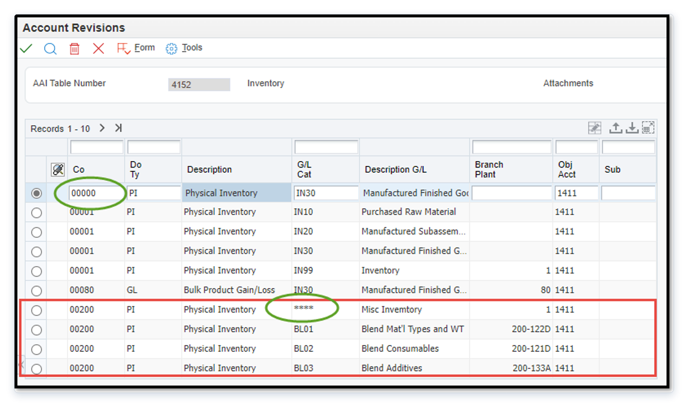
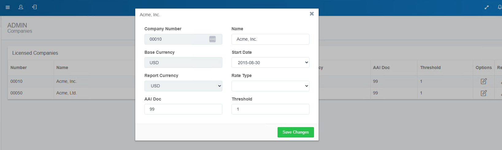
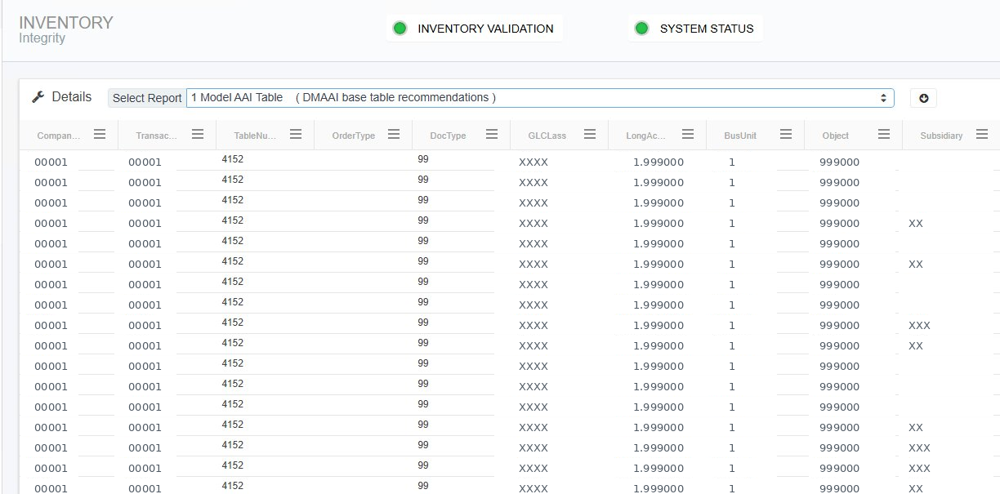
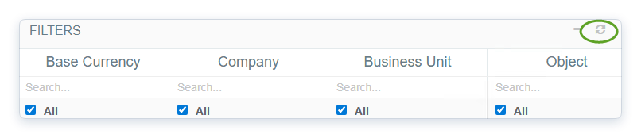

Managing Accounts
Inventory accounts in RapidReconciler are sourced directly from the DMAAI model table in JD Edwards. This guide covers the only JDE configuration RapidReconciler requires and walks through adding a new inventory account end-to-end.
Where do I add accounts?
Accounts cannot be added directly within the RapidReconciler application. All additions and changes must be made in JD Edwards, after which RapidReconciler picks them up during the next scheduled refresh cycle. To get started, see DMAAI Configuration in JDE.
Topics
| Topic | What It Covers |
|---|---|
| DMAAI Configuration in JDE | How RapidReconciler reads DMAAI table 4152, the role of the document type (default PI), and customer responsibility for entries. |
| How to Add an Inventory Account | Step-by-step procedure for creating a new DMAAI entry and the additional conditions required for the account to surface in RapidReconciler. |
| Troubleshooting | Symptom → cause → action table for common issues when a new account does not appear. |
| Quick Reference | At-a-glance summary of defaults, ownership, and where things live. |
- Default DMAAI table
- 4152
- Default document type
- PI
- Where to add accounts
- JD Edwards → DMAAI → Account Revisions
- When new accounts appear
- After the next completed nightly refresh cycle
- Owner of DMAAI accuracy
- The customer
Key principle. RapidReconciler does not maintain its own list of inventory accounts. It mirrors what is configured in JD Edwards DMAAI table 4152 under the configured document type — nothing more, nothing less.
DMAAI Configuration in JD Edwards
The DMAAI (Default Model AAI) table in JD Edwards defines the general ledger accounts associated with inventory transactions by GL class code. RapidReconciler reads these entries to determine which accounts to display in the reconciliation interface.
How RapidReconciler Uses DMAAI
RapidReconciler uses DMAAI table 4152 with document type PI as the default to determine which inventory accounts are displayed in the application.

| Setting | Default Value |
|---|---|
| DMAAI Table | 4152 |
| Document Type | PI |
Note. The default document type of PI may have been changed for your organization. Check with your RapidReconciler administrator to confirm the correct document type before proceeding.
Changing the Default Document Type
The default document type (PI) may be changed by the RapidReconciler administrator in the company settings. If a different document type is configured, additional DMAAI entries must be set up in JD Edwards for that document type in order for the correct accounts to appear in RapidReconciler.

Important. Setting up and maintaining DMAAI entries in JD Edwards is the responsibility of the customer. RapidReconciler displays accounts based on whatever entries exist in the configured DMAAI table and document type — the customer is responsible for vetting the accuracy of these entries.
Summary of Setup Requirements
DMAAI table 4152 with the appropriate document type is the only JD Edwards configuration required for RapidReconciler. No other JDE setup is needed for the application to function.
- JDE setup checklist
- DMAAI table
4152exists in JD Edwards - The configured document type (default
PI) is present in 4152 - The document type configured in RapidReconciler company settings matches the DMAAI entries
How to Add an Inventory Account
Adding an inventory account is a two-part process: first, create the DMAAI entry in JD Edwards; second, ensure the conditions required for the account to surface in RapidReconciler are all met.
Before you begin. Confirm the model document type with your RapidReconciler administrator before creating any DMAAI entries. The default is PI, but it may have been changed for your organization in company settings — entries created under the wrong document type will not be picked up. See DMAAI Configuration in JDE → Changing the Default Document Type.
Step-by-Step Procedure
Follow these steps to add a new inventory account in RapidReconciler:
- Log in to JD Edwards.
- Navigate to the DMAAI screen (Account Revisions).
- Inquire on table 4152, filtering on your model document type (typically
PI). - Create a new entry using the following fields:
| Field | Description |
|---|---|
| Company Number | The company number associated with the new account. |
| GL Class Code | The GL class code for the inventory items to be associated with this account. |
| Business Unit | The business unit component of the account number. |
| Object Account | The object account component of the account number. |
| Subsidiary | The subsidiary component of the account number, if applicable. |
Tip. If you are unsure which GL class code to use, refer to your JD Edwards item master records or consult your JD Edwards administrator. The GL class code on the DMAAI entry must match the GL class code assigned to the inventory items you want to reconcile.
Use Integrity Report 1 shown below to validate that the new DMAAI entry is set up correctly and will be picked up by RapidReconciler:

Additional Requirements
In addition to creating the DMAAI entry, the following conditions must be met before the new account will appear in RapidReconciler:
- Inventory transaction activity must exist. There must be at least one inventory transaction for an item with the associated GL class code. The account will not appear in the filter list without transaction activity.
- A RapidReconciler refresh cycle must complete. The nightly import job must complete at least one full cycle after the DMAAI entry has been created and transaction activity exists.
- Manual refresh if needed. If the account still does not appear after the refresh cycle has completed, click the refresh icon in the top right corner of the account filters on the RapidReconciler reconciliation page to force the filter list to reload.

Note. If the account still does not appear after completing all of the above steps, verify that the DMAAI entry was saved correctly in JD Edwards and that the GL class code matches the items with transaction activity. Contact your RapidReconciler administrator if the issue persists.
Summary Checklist
- Before the account will appear
- DMAAI entry created in JDE table 4152 under the correct document type
- At least one inventory transaction exists for an item with the matching GL class code
- The nightly refresh cycle has completed at least once since the entry was created
- Manual refresh applied (if needed) using the icon in the account filters panel
Troubleshooting
If a new inventory account is not appearing where you expect, work through the symptoms below before opening a support ticket. Most issues come down to either missing transaction activity, an unrun refresh cycle, or a document-type mismatch between RapidReconciler and JD Edwards.
Symptom → Cause → Action
| Symptom | Likely Cause | Action |
|---|---|---|
| New account not appearing after refresh. | No transaction activity for the GL class code. | Confirm at least one inventory transaction exists for an item with the matching GL class code. |
| New account not appearing after transactions exist. | Refresh cycle has not yet run. | Wait for the nightly import job to complete and check again. |
| Account filter list appears stale. | Cached filter data. | Click the refresh icon in the top right corner of the account filters. |
| Wrong accounts appearing. | Incorrect document type configured. | Check with your RapidReconciler administrator to confirm the document type in company settings. |
| DMAAI entry saved but account missing. | Entry may reference wrong table or document type. | Verify the entry is in table 4152 under the correct document type. |
Common Pitfalls
Q: I added the DMAAI entry this morning — why don't I see the account yet?
A: New entries surface only after the nightly RapidReconciler refresh cycle completes. If you cannot wait, ensure transaction activity exists for the GL class code and then click the manual refresh icon in the account filter panel.
Q: Accounts that should not be there are showing up. Where do I look first?
A: Confirm the document type configured in RapidReconciler company settings matches what was used for the DMAAI entries in JDE. A mismatch is the most common cause of unexpected accounts. See DMAAI Configuration in JDE → Changing the Default Document Type.
Q: I am sure the DMAAI entry is saved — how can I verify RapidReconciler sees it?
A: Run Inventory Integrity Report 1 (Model DMAAI). It lists every DMAAI entry RapidReconciler has picked up from JDE; if your new entry is not in the report, RapidReconciler does not yet see it.
Quick Reference
A one-page summary of the defaults, ownership, and configuration touch-points for managing accounts in RapidReconciler. Use this as a cheat sheet alongside the procedural topics.
Defaults & Ownership
| Item | Detail |
|---|---|
| Default DMAAI table | 4152 |
| Default document type | PI |
| Where to add accounts | JD Edwards DMAAI screen (Account Revisions) |
| When accounts appear in RapidReconciler | After the next completed nightly refresh cycle |
| Who is responsible for DMAAI accuracy | The customer |
| Only JD Edwards setup required | DMAAI table 4152 with the configured document type |
Process at a Glance
| # | Action | Where |
|---|---|---|
| 1 | Create DMAAI entry | JDE → DMAAI → Account Revisions (table 4152) |
| 2 | Generate transaction activity | Any item using the matching GL class code |
| 3 | Wait for refresh cycle | RapidReconciler nightly import job |
| 4 | Manual refresh (optional) | RapidReconciler reconciliation page → account filters → refresh icon |
| 5 | Validate | Inventory Integrity Report 1 (Model DMAAI) |
Remember. RapidReconciler reflects JDE; it does not source-of-truth account configuration. Every change to the inventory account list begins in JD Edwards.